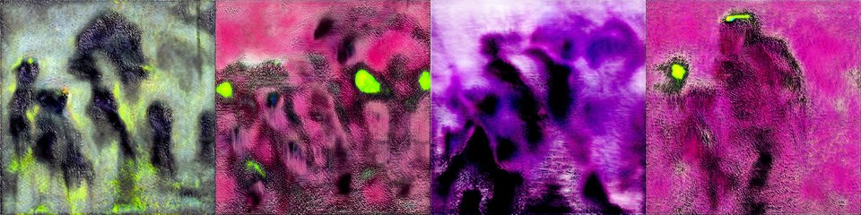

← Async Art — living works · all collections
by Athena Novo · Async Art Master #4306 · four-phase · time rule: UTC
Updates four times a day to reflect sunrise / day / sunset / night cycles.

Sunrise 06:00–06:59 · Day 07:00–17:59 · Sunset 18:00–18:59 · Night 19:00–05:59 (UTC)
The full-size files live on IPFS; each is linked on three public gateways, in the order to try them (gateway.pinata.cloud, ipfs.io, dweb.link). Every line says what our own check found: 5 we keep this file pinned, 1 our own copy, pinned here and verified on upload.
QmQWwuYQYwBN5j… gateway.pinata.cloud · ipfs.io · dweb.link — we keep this file pinned, checked 2026-09-23 09:13QmXs2qGS6MrAri… gateway.pinata.cloud · ipfs.io · dweb.link — we keep this file pinned, checked 2026-09-23 09:13Qme1R3jAb3JvS5… gateway.pinata.cloud · ipfs.io · dweb.link — we keep this file pinned, checked 2026-09-23 09:13QmSy1vVzwn2smw… gateway.pinata.cloud · ipfs.io · dweb.link — we keep this file pinned, checked 2026-09-23 09:13bafybeiddo7og6… gateway.pinata.cloud · ipfs.io · dweb.link — our own copy, pinned here and verified on upload, checked 2026-09-22QmWKraXMYguMKi… gateway.pinata.cloud · ipfs.io · dweb.link — we keep this file pinned, checked 2026-09-23 09:13QmXs2qGS6MrAri… gateway.pinata.cloud · ipfs.io · dweb.link — we keep this file pinned, checked 2026-09-23 09:13QmXs2qGS6MrAri… gateway.pinata.cloud · ipfs.io · dweb.link — we keep this file pinned, checked 2026-09-23 09:13QmSy1vVzwn2smw… gateway.pinata.cloud · ipfs.io · dweb.link — we keep this file pinned, checked 2026-09-23 09:13QmQWwuYQYwBN5j… gateway.pinata.cloud · ipfs.io · dweb.link — we keep this file pinned, checked 2026-09-23 09:13Qme1R3jAb3JvS5… gateway.pinata.cloud · ipfs.io · dweb.link — we keep this file pinned, checked 2026-09-23 09:13"They too know all too well that some cracks were built just for us to fall through. We live in a world that tries to steal spirits each day; they steal ours by taking us away." from Love Lessons in a Time of Settler Colonialism by Tanaya Winder ... 4 AI assisted surreal paintings leading the way to the ghosts.. Ghosts of Our Grandparents by Athena Novo Minted on Async Art, 2021
async.art · OpenSea · Etherscan
Generated archive pages. Content identifiers point to the public IPFS network.